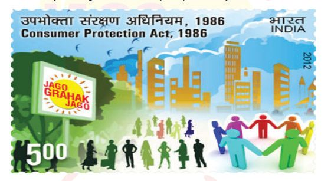
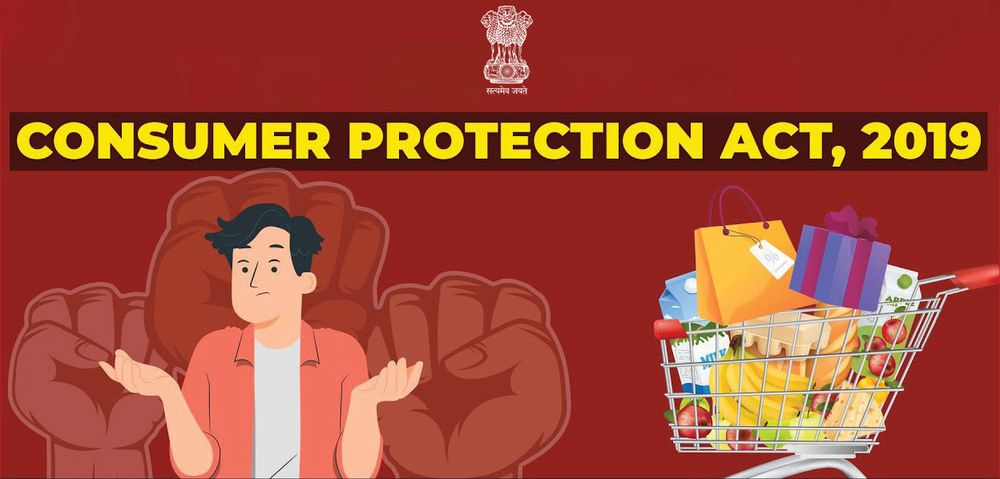

ദൈനംദിന ഉപയോോഗങ്ങൾക്കായി നാം സാധനങ്ങളുംം
സേവനങ്ങളുംം വാങ്ങാറില്ലേ? എവിടെയൊൊക്കെ നിന്നാണ്
നമുക്ക്
ആവശ്യയമായ
സാധനങ്ങളുംം
സേവനങ്ങളുംം
ലഭ്യയമാകുന്നത്? ഇവയെല്ലാം ലഭിക്കുന്നത് നമുക്ക് ചുറ്റുമുള്ള
ചെറിയ കടകൾ മുതൽ ലോോകം മുഴുവൻ വ്യാപിച്ചു കിടക്കുന്ന
ഓൺലൈൻ ശൃംഖലകൾ ഉൾപ്പെടുന്ന വിപണികളിൽ
നിന്നുമാണ്. വില്പനക്കാരുംം വാങ്ങുന്നവരുംം തമ്മിൽ അടുത്ത
ബന്ധം സ്ഥാപിക്കുന്ന ഇടത്തെ നമുക്ക് വിപണി അഥവാ
കമ്പോോളം (Market) എന്നുവിളിക്കാം.
മനുഷ്യയൻ തന്റെ ആവശ്യയങ്ങൾ നിറവേറ്റുന്നതിനായി
സാധനങ്ങളുംം
സേവനങ്ങളുംം
വാങ്ങി
ഉപയോോഗി
ക്കുന്നതിനെ ഉപഭോോഗം (Consumption) എന്നും വില
കൊൊടുത്തോോ വില കൊൊടുക്കാമെന്ന കരാറിലോോ സാധന
സേവനങ്ങൾ
വാങ്ങി
ഉപയോോഗിക്കുന്ന
ആളാണ്
ഉപഭോോക്താവ് (Consumer) എന്നും നാം മുൻ ക്ലാസുകളിൽ
പഠിച്ചിട്ടുണ്ടല്ലോോ. കൂടാതെ ഉപഭോോഗത്തെ സ്വാധീനിക്കുന്ന
ഘടകങ്ങളുംം ചർച്ച ചെയ്തതാണ്. അവ ഏതൊൊക്കെയാണെന്ന്
എഴുതി നോോക്കൂ.
ചിത്രം 4.1
സാധനങ്ങളുടെ വില
ചിത്രം 4.2
Page 84
Figure fig_ch04_p084_01 (Page 84)
സാമൂഹ്യയശാസ്ത്രം II
ഉപഭോോക്തൃ സംതൃപ്തി
(Consumer satisfaction)
ആൽഫ്രഡ് മാർഷൽ
ചിത്രം 4.3
സാധനങ്ങളുംം സേവനങ്ങളുംം ഉപയോോഗിക്കുന്നതിലൂടെ ഉപഭോോക്താ
വിന് സംതൃപ്തി (Consumer satisfaction) ലഭിക്കുന്നു. ഇത്തര
ത്തിൽ ലഭിക്കുന്ന സംതൃപ്തിയെ അളന്ന് തിട്ടപ്പെടുത്താൻ സാധി
ക്കുമോോ? ഉപഭോോക്താവിന്റെ സംതൃപ്തിയാണ് എല്ലാ സാമ്പത്തിക
പ്രവർത്തനങ്ങളുടെയും പ്രധാന ലക്ഷ്യയമെന്ന് നമുക്കറിയാം.
സംതൃപ്തി എന്നത് വ്യയക്തിഗതവും ഓരോോരുത്തരുടെയും മാനസിക
അവസ്ഥയെ ആശ്രയിച്ചിരിക്കുന്നതിനാലും ഇത് ഗണിതപരമായി
അളക്കുക പ്രയാസമാണ്. എന്നാൽ സംതൃപ്തിയിൽ ഉണ്ടാകുന്ന
ഗതിവിഗതികൾ അറിയണമെങ്കിൽ അത് നാം തിട്ടപ്പെടുത്തേണ്ട
തുണ്ട്. ഇതിനുള്ള ആദ്യയശ്രമം നടത്തിയത് ആൽഫ്രഡ് മാർഷൽ എന്ന
സാമ്പത്തിക ശാസ്ത്രജ്ഞനാണ്. ഉപഭോോഗം വഴി ലഭിക്കുന്ന സംതൃ
പ്തിയെ സാധനസേവനങ്ങളുടെ ഉപയുക്തതയായി കണക്കാക്കാം.
ഉപയുക്തത (Utility)
ഒരു വസ്തു ഉപഭോോഗം ചെയ്യുമ്പോോൾ അതിൽ നിന്നും ലഭിക്കുന്ന
സംതൃപ്തിയെ ഉപയുക്തത (Utility) എന്നാണ് പറയുന്നത്. ഈ
ഉപയുക്തതയെ നമുക്ക് യൂട്ടിൽസ് (Utils) എന്ന യൂണിറ്റ് ഉപയോോ
ഗിച്ച് അളക്കാം. സാധന സേവനങ്ങളുടെ ഉപഭോോഗത്തിലൂടെ ഉപഭോോ
ക്താവിന് ലഭിക്കുന്ന സംതൃപ്തിയെ എണ്ണൽസംഖ്യയ ഉപയോോഗിച്ച് തിട്ട
പ്പെടുത്താൻ കഴിയുമെന്ന് കാർഡിനൽ ഉപയുക്തതാവാദത്തിൽ
(Cardinal Utility Theory) പറയുന്നു. ഉപയുക്തതയിൽ വരുന്ന മാറ്റം
സാധനസേവനങ്ങളുടെ തിരഞ്ഞെടുപ്പിനെയും ഉപഭോോഗത്തെയും സ്വാധീ
നിക്കാം. നിശ്ചിത സമയത്ത് ഒരു വസ്തു തുടർച്ചയായി ഉപഭോോഗം
നടത്തുമ്പോോൾ ഉപയുക്തതയിൽ വരുന്ന മാറ്റം അറിയണമെങ്കിൽ
ഉപയുക്തതയുടെ അളവുകളെപ്പറ്റി അറിയേണ്ടതുണ്ട്. അവ ഏതൊൊക്കെ
യെന്ന് നോോക്കാം.
മൊൊത്തം ഉപയുക്തത (Total Utility - TU)
ഒരു വസ്തുവിന്റെ പല യൂണിറ്റുകൾ തുടർച്ചയായി ഉപയോോഗിക്കുമ്പോോൾ
അതിൽ നിന്ന് ഒരു വ്യയക്തിയ്ക്ക് ലഭിക്കുന്ന ഉപയുക്തതയുടെ ആകെ
തുകയാണ് മൊൊത്തം ഉപയുക്തത.
സീമാന്ത ഉപയുക്തത (Marginal Utility - MU)
ഒരു വസ്തുവിന്റെ ഒരു അധിക യൂണിറ്റ് ഉപഭോോഗം ചെയ്യുമ്പോോൾ
മൊൊത്തം ഉപയുക്തതയിൽ ഉണ്ടാകുന്ന മാറ്റത്തെ സീമാന്ത ഉപയുക്തത
84
ഭാഗം 1
Page 85
Figure fig_ch04_p085_01 (Page 85)
ഉപഭോോക്താവ് : അവകാശങ്ങളുംം സംരക്ഷണവും
എന്നുപറയുന്നു. ഇത് എങ്ങനെയാണ് പ്രവർത്തിക്കുന്നതെന്ന് ഒരു ഉദാഹരണ
സഹിതം നമുക്ക് പരിശോോധിക്കാം.
നിങ്ങളുടെ ക്ലാസിലെ നീനയ്ക്ക് ഏറ്റവും ഇഷ്ടപ്പെട്ട പഴം ഓറഞ്ചാണെന്ന്
കരുതുക. അവൾക്ക് നിങ്ങൾ ഓരോോ ഓറഞ്ചായി കഴിക്കാൻ കൊൊടുക്കുന്നു
എന്ന് സങ്കല്പിക്കുക. ഒന്നാമത്തെ ഓറഞ്ച് കഴിക്കുമ്പോോൾ അവൾക്ക് വലിയ
സംതൃപ്തി ആയിരിക്കും ലഭിക്കുക. അപ്പോോൾ അതിൽ നിന്നും 20 യൂട്ടിൽസ്
സംതൃപ്തി ലഭിച്ചുവെന്ന് കരുതുക. നീനയ്ക്ക് രണ്ടാമതായി ഒരു ഓറഞ്ച് കൂടി
കഴിക്കാൻ നൽകിയാൽ അതിൽ നിന്നും ആദ്യയത്തേതിന്റെ അത്ര സംതൃപ്തി
സാധാരണഗതിയിൽ ലഭിക്കണമെന്നില്ല. രണ്ടാമത്തെ ഓറഞ്ചിൽ നിന്ന് 18
യൂട്ടിൽസ് സംതൃപ്തി ലഭിക്കുന്നു എന്നിരിക്കട്ടെ. അങ്ങനെ രണ്ട് ഓറഞ്ചുകളിൽ
നിന്നുമായി ലഭിച്ച മൊൊത്തം സംതൃപ്തി 38 യൂട്ടിൽസാണ്. അതായത്
രണ്ടാമത്തെ ഓറഞ്ചിന്റെ ഉപഭോോഗത്തിലൂടെ ലഭിച്ച 18 യൂട്ടിൽസാണ്
അവിടെ സീമാന്ത ഉപയുക്തത (38-20 = 18). ഇങ്ങനെ തുടർച്ചയായി 5
ഓറഞ്ച് കഴിച്ചുവെന്നിരിക്കട്ടെ. അഞ്ചിൽ നിന്നും കൂടി ലഭിച്ച ഉപയുക്തതയെ
മൊൊത്തം ഉപയുക്തത എന്നും അഞ്ചാമത്തെ യൂണിറ്റ് കഴിക്കുമ്പോോൾ, 4
എണ്ണം കഴിച്ചതിൽ നിന്നും
മൊൊത്തം ഉപയുക്തതയിൽ വന്ന മാറ്റത്തെ
സീമാന്ത ഉപയുക്തത എന്നും ഈ ഉദാഹരണത്തിൽ നിന്നും കണ്ടെത്താം.
ഇത്തരത്തിൽ ഓരോോ യൂണിറ്റ് ഓറഞ്ച് കൂടുതലായി ഉപയോോഗിക്കുമ്പോോഴുംം
മൊൊത്തം ഉപയുക്തതയിലും സീമാന്ത ഉപയുക്തതയിലും വരുന്ന മാറ്റം
താഴെ പട്ടികയിൽ കൊൊടുത്തിരിക്കുന്നു. പട്ടിക പരിശോോധിച്ച് തുടർന്നുള്ള
ചോോദ്യയങ്ങൾക്ക് ഉത്തരം കണ്ടെത്തുക.
ഓറഞ്ചിന്റെ അളവ്
മൊൊത്തം ഉപയുക്തത
സീമാന്തത ഉപയുക്തത
1
20
20
2
38
18
3
53
15
4
63
10
5
67
4
6
67
0
7
64
-3
8
57
-7
1 മുതൽ 5 വരെ യൂണിറ്റ് ഓറഞ്ച് ഉപയോോഗിക്കുമ്പോോൾ മൊൊത്തം ഉപയുക്തതയ്ക്ക്
എന്ത് സംഭവിക്കുന്നു? 6 യൂണിറ്റിന് ശേഷം മൊൊത്തം ഉപയുക്തതയിൽ എന്ത്
മാറ്റമാണ് വരുന്നത്?
എത്രാമത്തെ യൂണിറ്റ് ഓറഞ്ച് ഉപയോോഗിക്കുമ്പോോഴാണ് സീമാന്ത ഉപയുക്തത
പൂജ്യംം ആകുന്നത്? 7, 8 എന്നീ യൂണിറ്റ് ഓറഞ്ച് ഉപയോോഗിക്കുമ്പോോൾ സീമാന്ത
ഉപയുക്തത നെഗറ്റീവ് ആകുന്നത് എന്തുകൊൊണ്ട്?
സ്റ്റാൻഡേർഡ് X
മുകളിലെ പട്ടികയിൽ കൊൊടുത്തിട്ടുള്ള അളവുകൾ ഉപയോോഗിച്ച്
നമുക്കൊൊരു മൊൊത്തം ഉപയുക്തത വക്രവും (Total Utility Curve) സീമാന്ത
ഉപയുക്തത വക്രവും (Marginal Utility Curve) വരയ്ക്കാം.
മൊൊത്തം ഉപയുക്തതയും
സീമാന്ത
Chart
Title ഉപയുക്തതയും
80
70
60
ഉപയുക്തത
50
40
30
20
10
0
-10 0
-20
1
2
3
4
5
6
7
8
9
ഓറഞ്ചിന്റെ അളവ്
സീമാന്ത
ഉപയുക്തത
മൊൊത്തം
ഉപയുക്തത
സീമാന്തത
ഉപയുക്തത
െമാത്തം
ഉപയുക്തത
ചിത്രം 4.4
ചിത്രം 4.4 നിരീക്ഷിച്ച് മൊൊത്തം ഉപയുക്തതയും സീമാന്ത ഉപയുക്തതയും
തമ്മിലുള്ള ബന്ധം വ്യയക്തമാക്കുന്ന കുറിപ്പ് തയ്യാറാക്കുക.
അപചയ സീമാന്ത
ഉപയുക്തത നിയമം
(Law of Diminishing Marginal
Utility)
മറ്റ് വസ്തുക്കളുടെ ഉപഭോോഗത്തിൽ
മാറ്റമില്ലാതെ ഒരു സാധനത്തിന്റെ
കൂടുതൽ യൂണിറ്റുകൾ
തുടർച്ചയായി ഉപഭോോഗം
ചെയ്യുമ്പോോൾ അതിൽ നിന്നും
ലഭിക്കുന്ന സീമാന്ത ഉപയുക്തത
കുറഞ്ഞുവരുന്നു എന്നാണ്
അപചയ സീമാന്ത ഉപയുക്തത
നിയമം പറയുന്നത്.
86
കാർഡിനൽ ഉപയുക്തത വാദത്തിന്റെ അനുമാനങ്ങളുംം
പരിമിതികളുംം
(Assumptions and limitations of cardinal utility
theory)
ഉല്പന്നങ്ങളെല്ലാം ഒരേ ഗുണമേന്മയുള്ളതായിരിക്കണം,
ഉപഭോോക്താവിന്റെ വരുമാനം, അഭിരുചി എന്നിവ സ്ഥിര
മായിരിക്കണം. എന്നീ അനുമാനങ്ങളുടെ അടിസ്ഥാന
ത്തിലാണ് അപചയ സീമാന്ത ഉപയുക്തത നിയമം
പ്രസ്താവിച്ചിട്ടുള്ളത്. ഉപഭോോഗം തുടർച്ചയുള്ളതായിരി
ക്കണം, മറ്റ് സാധനങ്ങളുടെ ഉപഭോോഗം നിജപ്പെടുത്തി
യിരിക്കണം, യൂണിറ്റുകൾ നിശ്ചിത അളവിലും ഗുണ
ത്തിലും ഉള്ളവയായിരിക്കണം എന്നിവ അപചയ
സീമാന്ത ഉപയുക്തത നിയമത്തിന്റെ ചില പരിമിതികളാണ്.
ഭാഗം 1
Page 87
Figure fig_ch04_p087_01 (Page 87)
ഉപഭോോക്താവ് : അവകാശങ്ങളുംം സംരക്ഷണവും
ഉപയുക്തത എന്നത് എണ്ണൽസംഖ്യയ ഉപയോോഗിച്ച് തിട്ടപ്പെടുത്താൻ
കഴിയാത്തതുകൊൊണ്ട്
കാർഡിനൽ
ഉപയുക്തത
വാദത്തിന്
പകരമായി പുതിയ സിദ്ധാന്തങ്ങൾ രൂപപ്പെട്ട് വന്നിട്ടുണ്ട്. എന്നിരുന്നാലും
ഒരു വസ്തുവിന്റെ അധിക യൂണിറ്റുകൾ ഉപയോോഗിക്കുമ്പോോൾ അതിൽ
നിന്ന്
കിട്ടുന്ന
ഉപയുക്തത
കുറഞ്ഞുവരുന്നുവെന്ന
വസ്തുത
സാധാരണഗതിയിൽ ഉപഭോോഗത്തെ സ്വാധീനിക്കുന്നുണ്ട്.
ഉപയുക്തത എന്നത് വ്യയക്തിയധിഷ്ഠിതമാണ്. സ്ഥലം,
കാലം എന്നിവയ്ക്കനുസരിച്ച് ഉപയുക്തതയിൽ വ്യയത്യാസം
വരാം. ഉദാഹരണത്തിന് ചൂടുള്ള കാലാവസ്ഥയിൽ
അധിവസിക്കുന്ന ഒരാൾക്ക് ഫാൻ നൽകുന്ന ഉപയുക്തത
തണുപ്പുള്ള
കാലാവസ്ഥയിൽ
ലഭിക്കണമെന്നില്ല.
ഏതൊൊരു ഉപഭോോക്താവും ഏറ്റവും കൂടുതൽ ഉപയുക്തത
പ്രദാനം
ചെയ്യപ്പെടുന്ന
സാധന
സേവനങ്ങൾ
തിരഞ്ഞെടുക്കുവാനാണ് താൽപര്യയപ്പെടുക. എന്നാൽ
വസ്തുക്കളുടെ വില, ഉപഭോോക്താവിന്റെ വരുമാനം എന്നിവ
പലപ്പോോഴുംം സാധന സേവനങ്ങളുടെ തിരഞ്ഞെടുപ്പിനെ
സ്വാധീനിക്കാറുണ്ടെന്ന് നമുക്കറിയാമല്ലോോ. ഗുണമേന്മ
യുള്ള സാധന സേവനങ്ങൾ മിതമായ നിരക്കിലും
കൃത്യയമായ അളവിലും ലഭ്യയമാകണമെന്നാണ് ഏതൊൊരു
ഉപഭോോക്താവും ആഗ്രഹിക്കുന്നത്. അത് ഉപഭോോക്താ
വിന്റെ ഒരു അവകാശവുമാണ്. മറ്റ് എന്തെല്ലാം അവകാശ
ങ്ങളാണ് ഒരു ഉപഭോോക്താവിനുള്ളത്?
ഉപയുക്തതയും
ഉപയോോഗ്യയതയും
(Utility and Usefulness)
നിത്യയജീവിതത്തിൽ നാം ഉപയോോഗി
ക്കുന്ന എല്ലാ സാധന സേവന
ങ്ങൾക്കും ഉപയുക്തതയുണ്ട്.
എന്നാൽ അവയെല്ലാം ഉപയോോഗ
പ്രദമാവണമെന്നില്ല. ഉദാഹരണ
മായി സിഗരറ്റ് വലിക്കുന്ന ഒരാൾക്ക്
അതിൽ നിന്നും ഉപയുക്തത ലഭി
ക്കുന്നുണ്ട്. പക്ഷെ നമുക്ക് അറിയാ
വുന്നതുപോോലെ സിഗരറ്റ് എന്നത്
ഉപയോോഗപ്രദമായ ഒരു വസ്തുവല്ല.
മാത്രവുമല്ല അതിന്റെ ഉപയോോഗം
ആരോോഗ്യയത്തിന് ഹാരികരവുമാണ്.
ഉപയുക്തതയിൽ നൈതികതയ്ക്ക്
പ്രസക്തിയില്ല.
ഉപഭോോക്താവിന്റെ അവകാശങ്ങളുംം
സംരക്ഷണവും (Cosumer rights and protection)
ഉപഭോോക്താവിന്റെ അവകാശങ്ങളുംം അവ എങ്ങനെയൊൊക്കെ സംരക്ഷി
ക്കാമെന്നതും വിശദമാക്കുന്നതിന് മുമ്പ് സാധനങ്ങളുടെ വിവിധ തരങ്ങൾ
എന്താണെന്ന് നമുക്ക് പരിചയപ്പെടാം. വിവിധതരം സാധനസേവനങ്ങളുംം
അവയുടെ പ്രത്യേേകതകളുംം താഴെ കൊൊടുത്തിരിക്കുന്നു. ഉചിതമായ
ഉദാഹരണങ്ങൾ ചേർത്ത് പട്ടിക പൂർത്തിയാക്കുക. ഇതിനായി
നൽകിയിട്ടുള്ള സൂചനകൾ പ്രയോോജനപ്പെടുത്താവുന്നതാണ്.
വിവിധതരം സാധനങ്ങൾ
പ്രത്യേേകതകൾ
സൗൗജന്യയസാധനങ്ങൾ
പ്രകൃതിയിൽ ധാരാളമായിട്ടുള്ളവയും
(Free goods)
എല്ലാവർക്കും ലഭ്യയമായവയും ആയ
വസ്തുക്കളാണ് സൗൗജന്യയസാധനങ്ങൾ. ഇവ
സൗൗജന്യയമായി ലഭിക്കുന്നവയാണ്. ഇവയ്ക്ക്
വില നൽകേണ്ടതില്ല.
സ്റ്റാൻഡേർഡ് X
ഉദാഹരണങ്ങൾ
87
Page 88
സാമൂഹ്യയശാസ്ത്രം II
ഇക്കണോോമിക്
സാധനങ്ങൾ (Economic
goods)
ഉപഭോോഗ സാധനങ്ങൾ
(Consumer goods)
മൂലധനസാധനങ്ങൾ
(Capital goods)
ഈട് നിൽക്കുന്ന
സാധനങ്ങൾ
(Durable goods)
ഈട് നിൽക്കാത്ത
സാധനങ്ങൾ
(Non-Durable goods)
വില കൊൊടുത്തുവാങ്ങി ഉപയോോഗിക്കുന്ന
വസ്തുക്കളാണിവ. ഇക്കണോോമിക്
സാധനങ്ങൾ പലപ്പോോഴുംം
നിർമ്മിക്കപ്പെടുന്നതോോ പ്രകൃതിയിൽ നിന്ന്
ശേഖരിക്കപ്പെടുന്നതോോ ആകാം.
ജനങ്ങൾ തങ്ങളുടെ ആവശ്യയങ്ങളുംം
ലക്ഷ്യയങ്ങളുംം നിറവേറ്റുന്നതിനായി
അന്തിമമായി ഉപയോോഗിക്കുന്ന
ഉല്പന്നങ്ങളാണ് ഉപഭോോഗ വസ്തുക്കൾ.
വിലയെ അടിസ്ഥാനമാക്കി ക്രയവിക്രയം
നടത്തുന്ന ഇവ ഉൽപാദന പ്രക്രിയയ്ക്ക്
വീണ്ടും വിധേയമാകാത്തവയാണ്.
മറ്റ് ഉല്പന്നങ്ങളുംം സേവനങ്ങളുംം
ഉല്പാദിപ്പിക്കാനായി നിർമ്മിക്കപ്പെട്ട
സാധനങ്ങൾ ആണിവ.
മൂലധനസാധനങ്ങൾ ഉല്പാദനപ്രക്രിയയെ
സഹായിക്കുന്നതോോടൊൊപ്പം ചിലപ്പോോൾ
ഉപഭോോഗ സാധനങ്ങളായും
ഉപയോോഗിക്കാറുണ്ട്. അങ്ങനെ
ഉപയോോഗിക്കുമ്പോോൾ അവ
മൂലധനസാധനങ്ങളാവില്ല.
ദീർഘകാലത്തേക്ക് ഉപയോോഗിക്കാൻ
കഴിയുന്ന വസ്തുക്കളാണ് ഈട്
നിൽക്കുന്ന സാധനങ്ങൾ. ഇവ വീണ്ടും
ഉപയോോഗിക്കാൻ കഴിയുന്നവയായിരിക്കും.
കുറച്ച് കാലയളവിലേയ്ക്ക് മാത്രം
ഉപയോോഗിക്കാൻ കഴിയുന്ന വസ്തുക്കളാണ്
ഈട് നിൽക്കാത്ത
സാധനങ്ങൾ
സൂചനകൾ
വസ്ത്രങ്ങൾ, ധാതുക്കൾ
മേശ, വീട്
സൂര്യയപ്രകാശം, വായു
ഫാക്ടറികൾ, ഉപകരണങ്ങൾ
പാൽ, പച്ചക്കറി
ഭക്ഷണം, വാഹനങ്ങൾ
വീട്, ചെരിപ്പ്
വിവിധതരം സാധനങ്ങൾ നാം പരിചയപ്പെട്ടുവല്ലോോ. ഇവയൊൊക്കെ
വാങ്ങാൻ നാം പലപ്പോോഴുംം കമ്പോോളങ്ങളിൽ പോോകാറുണ്ട്. കമ്പോോളങ്ങളിൽ
നിന്നും സാധനങ്ങൾ വാങ്ങുമ്പോോൾ ഒരു ഉപഭോോക്താവ് എന്ന നിലയിൽ
നാം എന്തെല്ലാം കാര്യയങ്ങൾ ശ്രദ്ധിക്കണം. ലിസ്റ്റ് പൂർത്തീകരിക്കൂ.
ഉല്പന്നങ്ങളുടെ ഗുണമേന്മ
ഉല്പന്നങ്ങളുമായി ബന്ധപ്പെട്ട വിഷയങ്ങളായ
വില, ഗുണനിലവാരം, വാറന്റി, സുരക്ഷാമാന
ദണ്ഡങ്ങൾ തുടങ്ങിയവയെക്കുറിച്ച് വ്യയക്തമായ
ധാരണ ഇല്ലാത്ത ഉപഭോോക്താക്കൾ ചിലപ്പോോൾ
കബളിപ്പിക്കപ്പെടാറുണ്ട്. ഇത് ഉപഭോോക്താക്കളെ
ചൂഷണം ചെയ്യുന്നതിൽ കലാശിക്കാം. ഇത്തരം
ചൂഷണങ്ങൾ
ഒഴിവാക്കണമെങ്കിൽ
സാധന
സേവനങ്ങളുമായി ബന്ധപ്പെട്ട അടിസ്ഥാനപരമായ
പല കാര്യയങ്ങളുംം നാം അറിഞ്ഞിരിക്കേണ്ടതുണ്ട്.
സാധനസേവനങ്ങൾ വാങ്ങുമ്പോോൾ അതിന്റെ
ബില്ല് ലഭിക്കേണ്ടത് ഉപഭോോക്താവിന്റെ അവകാ
ശമാണ്. ബില്ലിൽ ജി.എസ്.ടി. (GST) നമ്പർ
ഉണ്ടോോയെന്ന് ഉറപ്പുവരുത്തണം ഇല്ലെങ്കിൽ കബ
ളിപ്പിക്കപ്പെട്ടേക്കാം. ബില്ല് വാങ്ങുന്നതിലൂടെ ഉപ
ഭോോക്തൃ അവകാശം സംരക്ഷിക്കുന്നതോോടൊൊപ്പം
ഒരു സാമൂഹിക പ്രതിബദ്ധത ഉറപ്പാക്കുകയും
കൂടിയാണ് ചെയ്യുന്നത്.
ഭരണഘടനയുടെ 101–ാം ഭേദഗതി
നടപ്പാക്കുന്നതിന്റെ ഭാഗമായി 2017
ജൂലൈ ഒന്നിന് ഇന്ത്യയയിൽ GST നിലവിൽ
വന്നു. പല തരത്തിലുള്ള നികുതികൾ
ഒന്നാക്കി. “ഒരു രാജ്യംം ; ഒരു നികുതി”
എന്ന ആശയത്തിലൂടെ സമ്പദ്വ്യയവസ്ഥ
സുതാര്യയമാക്കുകയാണ് GST-യുടെ
ലക്ഷ്യം. GST-യിൽ 5%, 12%, 18%, 28%
എന്നിങ്ങനെ പല നിരക്കുകളുണ്ട്. GSTയിൽ നിന്നും ഒഴിവാക്കിയ ഉല്പന്നങ്ങളുമുണ്ട്.
GST-യുടെ ഘടന താഴെ പറയുന്ന
പ്രകാരമാണ്. നാം നൽകുന്ന GST-യുടെ
50% സംസ്ഥാന സർക്കാരിനും (SGST)
50% കേന്ദ്രസർക്കാരിനും (CGST) ലഭി
ക്കുന്നു. 20 ലക്ഷം രൂപയിൽ കൂടുതൽ
വാർഷിക വിറ്റുവരവുള്ള വ്യാപാരികൾ GST
രജിസ്ട്രേഷൻ നിർബന്ധമായും നടത്തേണ്ട
താണ്.
1. സാധനസേവനങ്ങൾ
വാങ്ങി ബില്ല് ലഭിക്കുമ്പോോൾ അതിൽ GST നമ്പർ
ഉണ്ടോോയെന്ന് പരിശോോധിക്കുന്നതോോടൊൊപ്പം മറ്റെന്തെല്ലാം കാര്യയങ്ങളാണ്
ശ്രദ്ധിക്കേണ്ടതെന്ന് എഴുതിനോോക്കൂ.
GST നിരക്ക്
2. നിങ്ങളുടെ വീടുകളിൽ ഒരു നിശ്ചിത ഇടവേളയിൽ വാങ്ങിയ സാധനങ്ങളുടെ
ബില്ലുകൾ പരിശോോധിച്ച് വിവിധ GST നിരക്കുകൾ ചുമത്തിയിരിക്കുന്ന
സാധനങ്ങൾ കണ്ടെത്തി പട്ടിക തയ്യാറാക്കുക.
സ്റ്റാൻഡേർഡ് X
89
Page 90
Figure fig_ch04_p090_01 (Page 90)
സാമൂഹ്യയശാസ്ത്രം II
താഴെ കൊൊടുത്തിട്ടുള്ള കൊൊളാഷ് ശ്രദ്ധിക്കൂ. ഏതെല്ലാം തരത്തിലുള്ള
തട്ടിപ്പുകളാണ് നമുക്ക് ചുറ്റുംം നടക്കുന്നതെന്ന് നിരീക്ഷിക്കൂ.
ചിത്രം 4.5
അച്ചടി, ഇലക്ട്രോോണിക് മാധ്യയമങ്ങളിൽ ഇതുപോോലുള്ള വാർത്തകൾ
നാം ധാരാളമായി കാണാറുണ്ട്. ഉപഭോോക്താവിന്റെ അവകാശങ്ങൾ
ലംഘിക്കപ്പെടുക, ഉപഭോോക്താവ് വഞ്ചിക്കപ്പെടുക എന്നീ സാഹചര്യയങ്ങ
ളാണ് ഇത്തരം വാർത്തകളുടെ അടിസ്ഥാനം. ഇത്തരത്തിലുള്ള സംഭവ
ങ്ങൾ ചെറിയ തോോതിലാണെങ്കിലും വളരെ മുമ്പുതന്നെ നമ്മുടെ രാജ്യയത്ത്
ഉണ്ടായിരുന്നു. അവ പരിഹരിക്കുന്നതിനായി പല നീക്കങ്ങളുംം നടന്നിട്ടുണ്ട്.
അതിൽ ഏറ്റവും പ്രധാനപ്പെട്ടതാണ് ഉപഭോോക്തൃ സംരക്ഷണപ്രസ്ഥാനം.
ഉപഭോോക്തൃ സംരക്ഷണപ്രസ്ഥാനം
(Consumer Protection Movement)
1966-ൽ
ബോംംബെയിൽ കൺസ്യൂമർ ഗൈഡൻസ് സൊൊസൈറ്റി ഓഫ്
ഇന്ത്യയയുടെ രൂപീകരണത്തോോടുകൂടിയാണ് ഇന്ത്യയയിൽ ഉപഭോോക്തൃ
സംരക്ഷണപ്രസ്ഥാനം
നിലവിൽ
വരുന്നത്.
ഉപഭോോക്താവിന്റെ
അവകാശങ്ങൾ സംരക്ഷിക്കുന്നതിനും ക്ഷേമം ഉറപ്പാക്കുന്നതിനും
വേണ്ടി രൂപംകൊൊണ്ട ഒരു സാമൂഹിക മുന്നേറ്റമാണിത്. ഉപഭോോക്താക്കളെ
വഞ്ചിക്കുന്ന
സ്ഥാപനങ്ങൾക്കെതിരെ
പ്രവർത്തിക്കുന്ന
വിവിധ
ഉപഭോോക്തൃ സംഘടനകളുംം വ്യയക്തികളുമാണ് ഈ പ്രസ്ഥാനത്തെ
മുന്നോോട്ടുനയിക്കുന്നത്. ഇവയുടെ ലക്ഷ്യയങ്ങൾ താഴെ പറയുന്നവയാണ്.
ഉപഭോോക്തൃ അവകാശങ്ങൾ സംരക്ഷിക്കുക
തട്ടിപ്പുകളെ തടയുക
90
ഭാഗം 1
Page 91

Figure fig_ch04_p091_01 (Page 91)

Figure fig_ch04_p091_02 (Page 91)
ഉപഭോോക്താവ് : അവകാശങ്ങളുംം സംരക്ഷണവും
ഉപഭോോക്താവിനെ ശാക്തീകരിക്കുക
നിയമ നിർമ്മാണം നടത്തുക
പരസ്യയങ്ങളിൽ സത്യയസന്ധമായ വിവരങ്ങളാണെന്ന് ഉറപ്പുവരുത്തുക
രാഷ്ട്രീയ
ത്തുക
വേദികളിൽ ഉപഭോോക്താക്കളുടെ പ്രാതിനിധ്യം ഉറപ്പുവരു
ചൂഷണങ്ങൾക്കിരയാകാതെ സുഗമമായി ഉപഭോോഗം നടത്തുന്നതിന്
ഉപഭോോക്താക്കൾക്ക് കഴിയേണ്ടതുണ്ട്. ഇതിനായി നിയമസഹായം
ആവശ്യയമാണ്.
1985-ൽ
ഐക്യയരാഷ്ട്രസഭ
ഉപഭോോക്തൃസംരക്ഷണം
സംബന്ധിച്ച മാർഗരേഖകൾ ഉൾക്കൊൊള്ളുന്ന പ്രമേയം അംഗീകരിച്ചതിന്റെ
അടിസ്ഥാനത്തിൽ 1986 ഡിസംബർ 24-ന് ഉപഭോോക്തൃസംരക്ഷണ നിയമം
ഇന്ത്യയയിൽ നിലവിൽ വന്നു. ഇതിന്റെ ഭാഗമായി ഡിസംബർ 24 ദേശീയ
ഉപഭോോക്തൃദിനമായി ആചരിച്ചുവരുന്നു.
ഉപഭോോക്താവിന്റെ അവകാശങ്ങൾ സംരക്ഷിക്കുന്ന
തിനായി 1986-ൽ പാർലമെന്റിലെ ഇരുസഭ
കളുംം പാസ്സാക്കിയ നിയമമാണ് ഇത്. ഉപഭോോക്താ
വിന്റെ അവകാശങ്ങൾ സ്പഷ്ടമായി നിർവചിക്കു
കയും
ഉപഭോോക്തൃ
സംരക്ഷണത്തിനായി
ഇന്ത്യയയിൽ പ്രത്യേേക നീതിന്യായ സംവിധാനങ്ങൾ
സ്ഥാപിക്കുകയും ചെയ്തത് 1986-ലെ ഉപഭോോക്തൃ
സംരക്ഷണനിയമത്തിലൂടെയാണ്.
ചിത്രം 4.6
ഇ-കൊൊമേഴ്സ് പ്ലാറ്റ്ഫോോമുകൾ നിലവിൽവന്ന പുതിയസാഹചര്യയത്തിൽ
ഇത്തരം മേഖലകളിലും ഉപഭോോക്താവിന് സംരക്ഷണം നൽകുന്ന
നിയമം അനിവാര്യയമായി വന്നു. ഈ പശ്ചാത്തലത്തിലാണ് ഉപഭോോക്തൃ
സംരക്ഷണനിയമം – 2019 നിലവിൽ വന്നത്.
ഉപഭോോക്തൃ സംരക്ഷണ നിയമത്തിന് പുറമെ നിശ്ചിത
വിഷയങ്ങളിൽ ഉപഭോോക്താവിന്റെ അവകാശങ്ങൾ സംരക്ഷിക്കുന്നതി
നായി ചില നിയമങ്ങൾ കൂടി നിലവിലുണ്ട്. ഉദാഹരണമായി ഭക്ഷ്യോോല്പന്ന
ങ്ങളുടെ ഗുണനിലവാരം ഉറപ്പാക്കുന്നതിനായി നിലവിൽ വന്നതാണ്
ഭക്ഷ്യയസുരക്ഷാ സ്റ്റാൻഡേർഡ് ആക്ട് 2006.
ഉപഭോോക്താവിന്റെ
അവകാശങ്ങൾ
സംരക്ഷിക്കപ്പെടുന്നതിനായി
നിലവിലുള്ള നിയമങ്ങളെപ്പറ്റി നാം മനസ്സിലാക്കിയല്ലോോ. ഈ നിയമങ്ങൾ
ഉറപ്പ് നൽകുന്ന ഉപഭോോക്താവിന്റെ അവകാശങ്ങൾ എന്തൊൊക്കെയാണെന്ന്
നോോക്കാം.
സുരക്ഷിതത്വവത്തിനുള്ള അവകാശം
ജീവനും സ്വവത്തിനും അപകടകരമായ സാധനസേവന
ങ്ങളുടെ വിപണനത്തിൽ നിന്നും രക്ഷ നേടാനുള്ള അവ
കാശം.
തിരഞ്ഞെടുക്കാനുള്ള അവകാശം
മത്സരാധിഷ്ഠിത വിലയിൽ സാധനസേവനങ്ങൾ തിര
ഞ്ഞെടുക്കാനുള്ള അവകാശം.
അറിയാനുള്ള അവകാശം
ചിത്രം 4.8
92
അന്യായമായ വ്യാപാരസമ്പ്രദായങ്ങളിൽ നിന്നും
ഉപഭോോക്താവിനെ സംരക്ഷിക്കുന്നതിനായി സാധനങ്ങ
ളുടെ ഗുണമേന്മ, അളവ്, പരിശുദ്ധി, വിലനിലവാരം
എന്നിവ അറിയാനുള്ള അവകാശം.
ഭാഗം 1
Page 93
Figure fig_ch04_p093_01 (Page 93)
ഉപഭോോക്താവ് : അവകാശങ്ങളുംം സംരക്ഷണവും
പരിഹാരം തേടാനുള്ള അവകാശം
അന്യായമായ വ്യാപാരസമ്പ്രദായങ്ങൾക്കും ഉപഭോോക്തൃ ചൂഷണങ്ങൾക്കു
മെതിരെ പരിഹാരം തേടാനുള്ള അവകാശം.
ഉപഭോോക്തൃ വിദ്യാാഭ്യാാസത്തിനുള്ള അവകാശം
വിവരമുള്ള ഒരു ഉപഭോോക്താവാകാനുള്ള
നേടാനുള്ള അവകാശം.
അറിവും
വൈദഗ്ധ്യയവും
ഉപഭോോക്താക്കളുടെ അവകാശങ്ങൾ ഉൾക്കൊൊള്ളുന്ന പോോസ്റ്ററുകൾ തയ്യാറാക്കി
ക്ലാസിൽ പ്രദർശിപ്പിക്കുക.
ഉപഭോോക്തൃ കോോടതികൾ
ഉപഭോോക്തൃ കോോടതികളുടെ ചരിത്രം ആരംഭിക്കുന്നത് 1986-ൽ ഇന്ത്യയ
യിൽ ഉപഭോോക്തൃ സംരക്ഷണ നിയമം (Consumer Protection Act)
നിലവിൽ വന്നതോോടുകൂടിയാണ്. ഇതോോടെ ഉപഭോോക്തൃ കോോടതികൾ
സ്ഥാപിക്കപ്പെടുകയും പരാതികൾ വേഗത്തിൽ പരിഹരിക്കുന്നതിനായുള്ള
ട്രിബ്യൂണലുകൾ രൂപവൽക്കരിക്കുകയും ചെയ്തു. ഉപഭോോക്തൃകോോടതികളെ
മൂന്ന് തലത്തിൽ വിന്യയസിച്ചിരിക്കുന്നു.
ഉപഭോോക്തൃ തർക്ക പരിഹാര സംവിധാനത്തിന്റെ ഘടന
സുപ്രീം കോോടതി
ദേശീയ ഉപഭോോക്തൃ തർക്ക പരിഹാര കമ്മിഷൻ
(10 കോോടി രൂപയ്ക്ക് മുകളിൽ നഷ്ടപരിഹാരം
വരുന്ന കേസുകൾ)
സംസ്ഥാന ഉപഭോോക്തൃ തർക്ക പരിഹാര കമ്മിഷൻ
(1 കോോടി മുതൽ 10 കോോടി രൂപ വരെയുള്ള നഷ്ടപരിഹാരം
വരുന്ന കേസുകൾ)
ജില്ലാ ഉപഭോോക്തൃ തർക്ക പരിഹാര കമ്മിഷൻ
(1 കോോടി രൂപ വരെയുള്ള നഷ്ടപരിഹാരം
വരുന്ന കേസുകൾ)
ഉപഭോോക്തൃ തർക്കങ്ങളിൽ ഇടപെട്ട് നഷ്ടപരിഹാരമുൾപ്പെടെ ഉപഭോോ
ക്താവിന് നീതി ലഭിക്കുന്നതിന് ഉപഭോോക്തൃ കോോടതികൾ നിർണ്ണായക
പങ്ക് വഹിക്കുന്നു.
ഇന്ത്യയയിലാകമാനം അറുനൂറിലധികം ജില്ലാ ഫോോറങ്ങളുംം 35 സംസ്ഥാന
കമ്മിഷനുകളുംം നിലവിലുണ്ട്. ഇതിനെല്ലാം മുകളിലായി നാഷണൽ
കൺസ്യൂമർ ഡിസ്പ്യൂട്ട്സ് റിഡ്രസ്സൽ കമ്മിഷൻ (NCDRC) എന്ന അപ്പെക്സ്
ബോോഡിയുമുണ്ട്.
ഉപഭോോക്തൃ സംരക്ഷണനിയമപ്രകാരം ഉപഭോോക്തൃ കോോടതികൾക്കുപുറമെ
ത്രിതല ഉപദേശക സമിതികളുംം നിലവിലുണ്ട്.
അവ താഴെ പറയുന്നവയാണ്.
ജില്ലാ ഉപഭോോക്തൃ സംരക്ഷണ കൗൗൺസിൽ
സംസ്ഥാന ഉപഭോോക്തൃ സംരക്ഷണ കൗൗൺസിൽ
ദേശീയ ഉപഭോോക്തൃ സംരക്ഷണ കൗൗൺസിൽ
അതത് സർക്കാരുകൾക്ക് ഉപഭോോക്താവിന്റെ അവകാശങ്ങളുമായി
ബന്ധപ്പെട്ട കാര്യയങ്ങളിൽ ഉപദേശം നൽകുക എന്നതാണ് ഈ
സമിതികളുടെ ധർമ്മം.
വിവിധതരം കബളിപ്പിക്കലുകളുംം അവ
പരിഹരിക്കാനായി സമീപിക്കാവുന്ന സ്ഥാപനങ്ങളുംം
മാർഗങ്ങളുംം
1. വിദ്യാാഭ്യാാസ സ്ഥാപനങ്ങളുമായി ബന്ധപ്പെട്ട തട്ടിപ്പുകൾ
a) UGC/AICTE/ State Board എന്നിവയുമായി ബന്ധപ്പെടുക
b) ഉപഭോോക്തൃ ഫോോറത്തെ സമീപിക്കുക
ചിത്രം 4.9
c) പോോലീസിൽ പരാതി നൽകുക
d) വിദ്യാാഭ്യാാസ മന്ത്രാലയവുമായി ബന്ധപ്പെടുക
2. ആരോോഗ്യയരംഗത്തെ കബളിപ്പിക്കലുകൾ
a) സ്റ്റേറ്റ്/നാഷണൽ മെഡിക്കൽ കൗൗൺസിലിലെ ഗ്രീവ
ആരോോഗ്യയ
തട്ടിപ്പുകൾക്ക്
ഹൈക്കോോടതിയിലും സുപ്രീംകോോടതിയിലും പബ്ലിക്
ഇന്ററസ്റ്റ് ലിറ്റിഗേഷൻ (PIL) ഫയൽ ചെയ്യാം.
d) ആരോോഗ്യയ സേതു ആപ് വഴി പരാതി നൽകാം.
3. വിദേശത്ത്
പറ്റിക്കലുകൾ
ജോോലി
a) പ്രൊൊട്ടക്ടറേറ്റ്
പരാതിപ്പെടാം
വാഗ്ദാനം
ഓഫ്
ചെയ്ത്
എമിഗ്രന്റ്സ്
നടത്തുന്ന
(POE)
വഴി
ചിത്രം 4.11
b) IPC സെക്ഷൻ 420 പ്രകാരം കേസ് ഫയൽ ചെയ്യാം
c) വിദേശത്ത് എത്തിയ ശേഷമാണ് പറ്റിക്കപ്പെട്ടതെങ്കിൽ
ഇന്ത്യയൻ
എംബസി/ഹൈകമ്മീഷനിൽ
സമർപ്പിക്കാം
പരാതി
d) പ്രവാസി ഭാരതീയ സഹായതാകേന്ദ്രവുമായി (PBSK)
ബന്ധപ്പെടാം. Toll Free No. 1800-11-3090
4. ഓൺലൈൻ തട്ടിപ്പുകൾ
a) സൈബർ
ക്രൈംം
പരാതിപ്പെടുക
സെല്ലിൽ
(cyber crime.gov.in)
b) CERT – IN എന്ന പോോർട്ടലിൽ റിപ്പോോർട്ട്
(Indian Computer Emergency Response Team)
ചിത്രം 4.12
ചെയ്യുക
c) ദേശീയ ഉപഭോോക്തൃ ഹെൽപ്പ്ലൈൻ വഴിയോോ info@
cert.in.org.in എന്ന അഡ്രസിലോോ പരാതി സമർപ്പി
ക്കുക.
5. ബാങ്കിംഗ് രംഗത്തെ കബളിപ്പിക്കലുകൾ
a) ബാങ്ക് ഗ്രീവൻസ് റെഡ്രസ്സൽ മെക്കാനിസത്തെ (ബ്രാഞ്ച്
മാനേജർ) സമീപിക്കുക
b) 30
ദിവസത്തിനുള്ളിൽ ബാങ്ക് മറുപടി തരാത്ത
പക്ഷം RBI – ഓംബുഡ്സ്മാനെ സമീപിക്കാം
c) ബാങ്കിങ്
ഓംബുഡ്സ്മാൻ
cgmbank@rbi.org.in
ടോോൾ
ഫ്രീ
നമ്പർ
ചിത്രം 4.13
14448,
സ്കൂൾ ലൈബ്രറിയിൽ നിന്നും കഴിഞ്ഞ 6 മാസത്തെ ദിനപത്രങ്ങൾ പരിശോോധിച്ച്
ഉപഭോോക്താക്കൾ ഇരയായ വിവിധതരം തട്ടിപ്പുകൾ കണ്ടെത്തി ഒരു കുറിപ്പ്
തയ്യാറാക്കുക.
സ്റ്റാൻഡേർഡ് X
പരാതികൾ എങ്ങനെ സമർപ്പിക്കാം
ഒരു ഉപഭോോക്താവ് കബളിപ്പിക്കപ്പെട്ടാൽ ബന്ധപ്പെട്ട ഓഫീസിലോോ
ഉപഭോോക്തൃ കോോടതികളിലോോ പരാതി നൽകാം. പരാതിയുള്ള ഏതൊൊരാൾക്കും
വെള്ള പേപ്പറിൽ പരാതി വിശദമായി എഴുതി ഉപഭോോക്തൃ തർക്ക പരിഹാര
കോോടതിയിൽ നേരിട്ട് സമർപ്പിക്കാവുന്നതാണ്. പരാതിയോോടൊൊപ്പം
തെളിവായി ആവശ്യയമായ രേഖകളുംം ചേർക്കേണ്ടതാണ്. ഇവിടെയാണ്
സാധനസാമഗ്രികൾ വാങ്ങുമ്പോോൾ ബില്ല് ചോോദിച്ചുവാങ്ങേണ്ടതിന്റെ
പ്രസക്തി വ്യയക്തമാകുന്നത്.
ചില ഗുണമേന്മ ചിഹ്നങ്ങൾ
ചിഹ്നം
പേര്
ബന്ധപ്പെട്ട മേഖല
ബ്യൂറോോ ഓഫ് ഇന്ത്യയൻ സ്റ്റാൻഡേർഡ്(BIS)
ഉൽപ്പന്നങ്ങളുടെ നിശ്ചിത ഗുണനിലവാരം
ഉറപ്പാക്കുന്നതിന് ഐ.എസ്ഐ മുദ്ര നൽകുന്നു.
ISI മാർക്ക് വൈദ്യുുത ഉപകരണങ്ങൾ, സിമന്റ്, പേപ്പർ, പെയിന്റ്,
ഗ്യാാസ് സിലിണ്ടർ തുടങ്ങിയ വ്യാവസായിക
ഉല്പന്നങ്ങളിൽ ഈ ചിഹ്നം കാണാം.
AGMARK
കാർഷിക-വന ഉല്പന്നങ്ങളുടെ ഗുണമേന്മ
ഉറപ്പാക്കുന്നതിന് ഈ ചിഹ്നം ഉപയോോഗിക്കുന്നു.
FSSAI
ഭക്ഷ്യയസുരക്ഷ ഉറപ്പാക്കുന്നു
ഉപഭോോക്താക്കളെ ബോോധവാന്മാരാക്കുന്നതിനും ഉല്പന്നങ്ങൾ വാങ്ങി
ഉപയോോഗിക്കുന്നതിന് മുമ്പുതന്നെ ഗുണമേന്മ ഉറപ്പുവരുത്തുന്നതിനും
വേണ്ടി ഉല്പന്നങ്ങളുടെ ലേബലിൻമേൽ മുകളിൽ സൂചിപ്പിച്ചതുപോോലുള്ള
ചില ചിഹ്നങ്ങൾ കൊൊടുക്കാറുണ്ട്. അവ ശ്രദ്ധിച്ചിട്ടുണ്ടോോ?
ചിത്രം 4.14-ൽ കൊൊടുത്തിട്ടുള്ള രണ്ട് ടൂത്ത്പേസ്റ്റുകളുടെ ലേബലുകൾ
പരിശോോധിച്ച് അതിൽ നിന്നും കണ്ടെത്തിയ ചിഹ്നങ്ങളുംം അവയുടെ
അർഥങ്ങളുംം ചേർത്ത് ഒരു കുറിപ്പ് തയ്യാറാക്കൂ.
വഴി ഓർഡർ ചെയ്ത് കിട്ടുന്ന സാധനങ്ങൾ അവയുടെ
പരസ്യയത്തിൽ നൽകിയവ തന്നെയാണോോയെന്ന് ഉറപ്പുവരുത്താറുണ്ടോോ?
ഒരിക്കലുമില്ല
എല്ലായ്പ്പോോഴുംം
വല്ലപ്പോോഴുംം
11. ലീഗൽ
മെട്രോോളജി വിഭാഗം നിഷ്കർഷിച്ചിട്ടുള്ള തൂക്കുകട്ടകൾക്ക്
പകരമായി
വഴിയോോര
കച്ചവടക്കാർ
മറ്റെന്തെങ്കിലും
വസ്തു
ക്കൾ ഉപയോോഗിച്ച് തൂക്കത്തിൽ കൃത്രിമം കാണിക്കുന്നത് ശ്രദ്ധയിൽ
പ്പെട്ടിട്ടുണ്ടോോ?
ഒരിക്കലുമില്ല
എല്ലായ്പ്പോോഴുംം
വല്ലപ്പോോഴുംം
12. വാഹനത്തിൽ
ഇന്ധനം നിറയ്ക്കുമ്പോോൾ പെട്രോോളിന്റെയും ഡീസലി
ന്റെയും സാന്ദ്രത പരിശോോധിച്ചിട്ടുണ്ടോോ?
ഒരിക്കലുമില്ല
എല്ലായ്പ്പോോഴുംം
വല്ലപ്പോോഴുംം
13. ഓട്ടോോറിക്ഷയിൽ
യാത്ര ചെയ്തതിന് ശേഷം മീറ്റർ റീഡിംഗിൽ
കാണിക്കുന്ന യാത്രാക്കൂലി തന്നെയാണോോ കൊൊടുക്കാറുള്ളത്?
ഒരിക്കലുമില്ല
എല്ലായ്പ്പോോഴുംം
വല്ലപ്പോോഴുംം
14. ഭിന്നശേഷി
സൗൗഹൃദസാഹചര്യംം എല്ലാ
ളിലുമുണ്ടോോ എന്ന് നോോക്കിയിട്ടുണ്ടോോ?
എല്ലായ്പ്പോോഴുംം
വല്ലപ്പോോഴുംം
വാണിജ്യയ
സ്ഥാപനങ്ങ
ഒരിക്കലുമില്ല
15. സിലിണ്ടറുകളിൽ
ലഭിക്കുന്ന പാചക ഇന്ധനം ഘടിപ്പിച്ച് ലീക്ക്
ഇല്ലായെന്ന് വിതരണക്കാരനെക്കൊൊണ്ട് പരിശോോധിപ്പിക്കാറുണ്ടോോ?
ഒരിക്കലുമില്ല
എല്ലായ്പ്പോോഴുംം
വല്ലപ്പോോഴുംം
16. ഒരു ഉപഭോോക്താവ്
എന്ന നിലയിൽ നിങ്ങൾ കബളിപ്പിക്കപ്പെട്ടുവെന്ന്
തിരിച്ചറിഞ്ഞാൽ പരാതിപ്പെടാൻ ശ്രമിക്കാറുണ്ടോോ?
ഒരിക്കലുമില്ല
എല്ലായ്പ്പോോഴുംം
വല്ലപ്പോോഴുംം
98
ഭാഗം 1
Page 99
Figure fig_ch04_p099_01 (Page 99)
ഉപഭോോക്താവ് : അവകാശങ്ങളുംം സംരക്ഷണവും
ഉപഭോോക്തൃ വിദ്യാാഭ്യാാസം
ഉപഭോോക്താക്കൾക്ക് തങ്ങളുടെ അവ
കാശങ്ങൾ, ഉത്തരവാദിത്വവങ്ങൾ, ഉല്പന്ന
ങ്ങളുടെയും സേവനങ്ങളുടെയും തിര
ഞ്ഞെടുപ്പ്, വിപണിയിലെ വ്യയത്യാസ
ങ്ങൾ, ഉപഭോോക്തൃ നിയമങ്ങൾ എന്നിവ
യെക്കുറിച്ച് അറിവ് നൽകുന്നതാണ്
ഉപഭോോക്തൃ വിദ്യാാഭ്യാാസം. ഇതിന്റെ ലക്ഷ്യയ
ങ്ങൾ താഴെ പറയുന്നവയാണ്.
1.
ഉപഭോോക്താവിന്റെ
സംരക്ഷിക്കുക.
അവകാശങ്ങൾ
2. ഉപഭോോക്തൃ ഉത്തരവാദിത്വവങ്ങൾ ബോോധ്യയ
മാക്കുക.
3. വ്യാപാരത്തിൽ പ്രത്യേേകിച്ച് ഓൺലൈൻ
വ്യാപാരത്തിൽ സുരക്ഷ ഉറപ്പാക്കുക.
4.
വിപണിയിലെ ധാർമ്മികതയും ചട്ട
ങ്ങളുംം തിരിച്ചറിയുക.
5. ഉപഭോോക്തൃസംരക്ഷണ നിയമത്തെക്കു
റിച്ച് ബോോധവൽക്കരണം നടത്തുക.
ചിത്രം 4.15
6. ആരോോഗ്യയ സുരക്ഷ ഉറപ്പാക്കുക.
7. ഉപഭോോക്തൃനീതി പ്രോോത്സാഹിപ്പിക്കുക
ഉപഭോോക്തൃ വിദ്യാാഭ്യാാസം ഉപഭോോക്താക്കളിൽ ബോോധവൽക്കരണം
ഉറപ്പാക്കുകയും സ്വവയംസുരക്ഷാമൂല്യംം ഉയർത്തുകയും ചെയ്യുന്നു. ഇത്
തട്ടിപ്പുകളിൽ നിന്നും തെറ്റായ ഇടപാടുകളിൽ നിന്നും സംരക്ഷിതരാകാൻ
ഉപഭോോക്താക്കളെ സഹായിക്കുന്നു.
ബോോധവൽകരണത്തിലൂടെ മികച്ച ഉപഭോോക്തൃ സമൂഹത്തെ നമുക്ക്
സൃഷ്ടിക്കാം. ഉപഭോോക്തൃ വിദ്യാാഭ്യാാസം എന്നത് ഒരു പ്രത്യേേക
വിഷയമാക്കി പാഠ്യയപദ്ധതിയിൽ ഉൾപ്പെടുത്തുകയും അതിലൂടെ പ്രായോോ
ഗിക അനുഭവങ്ങൾ കുട്ടികൾക്ക് ക്ലാസിൽ അവതരിപ്പിക്കാൻ സൗൗകര്യംം
ലഭിക്കുകയും ചെയ്യുന്നുണ്ട്. ഉപഭോോക്തൃ വിദ്യാാഭ്യാാസത്തിന് ഓൺലൈൻ
കോോഴ്സുകൾ ഇന്ന് ലഭ്യയമാണ്. വിദ്യാാർഥികളിൽ ഉപഭോോക്തൃ അവബോോധം
വളർത്തുന്നതിന് സ്കൂളുകളിലെ ഉപഭോോക്തൃ ക്ലബ്ബുകൾ സഹായിക്കുന്നു.
നിയമങ്ങളുംം നടപടികളുംം കൊൊണ്ടുമാത്രം ഉപഭോോക്താക്കളുടെ സംതൃപ്തി
പൂർണ്ണമായും ഉറപ്പുവരുത്താനാകില്ല. പൗൗരബോോധമുള്ള ഒരു സമൂഹത്തിന്റെ
ഇടപെടൽ കൂടി ഇതിനായി വേണ്ടതുണ്ട്. എങ്ങനെയൊൊക്കെ ഒരു സമൂഹത്തിന്
ഇക്കാര്യയത്തിൽ ഇടപെടാം? ക്ലാസിൽ ഒരു ചർച്ച സംഘടിപ്പിച്ച് കുറിപ്പ് തയ്യാറാക്കൂ.
സംസ്ഥാന
കൺസ്യൂമർ
ഹെൽപ്പ്ലൈനിൽ
പരാതികൾ രജിസ്റ്റർ
ചെയ്യുന്നതിന് consumeraffairs.kerala.gov.in
എന്ന വെബ്സൈറ്റ്
സന്ദർശിക്കുക.
ഉപഭോോക്താക്കൾക്ക്
പരാതി നൽകാനായി
1800 425 1550, 1967,
1915 എന്നീ ടോോൾഫ്രീ
നമ്പറുകളിലും വിളിക്കാം.
100
ഉപഭോോക്താക്കൾ തങ്ങളുടെ അവകാശങ്ങൾ അറിയുന്നതോോ
ടൊൊപ്പം നേരിടുന്ന പ്രശ്നങ്ങൾക്കെതിരെ പരാതിപ്പെട്ട് പരിഹാരം
കാണാനും പ്രാപ്തരാകേണ്ടതുണ്ട്. ആവശ്യയമുള്ള സാധനസേവ
നങ്ങൾ മാത്രം ഉപഭോോഗം നടത്തുന്ന മനോോഭാവം നാം
വളർത്തേണ്ടതുണ്ട്. ഇത് സാധനസേവനങ്ങൾ ലഭ്യയമല്ലാത്ത
ജനസമൂഹത്തിന്
അവ
ലഭിക്കാനുള്ള
അവസരമാണ്
ഒരുക്കുന്നത്. ഇതുവഴി സുസ്ഥിര ഉപഭോോഗവും വികസനവും
കൈവരിക്കാം. ഉൽപാദകരുംം ഉപഭോോക്താക്കളുംം ബന്ധ
പ്പെടുന്ന വ്യാപാരമേഖലയിൽ നൈതികത ഉറപ്പാക്കുന്ന
തിനായി ഉപഭോോക്തൃ സംരക്ഷണ നിയമത്തിന് വലിയ
പങ്കാണുള്ളത്. ഉപഭോോക്തൃ വിദ്യാാഭ്യാാസം ലഭിച്ച പൗൗരബോോധ
മുള്ള ഒരു സമൂഹത്തിന്റെ ഇടപെടൽ ഉപഭോോക്തൃ സംരക്ഷണ
ത്തിലുണ്ടാകണം.
തുടർപ്രവർത്തനങ്ങൾ
1. nationalconsumerhelpline.gov.in എന്ന വെബ്സൈറ്റ്
സന്ദർശിച്ച്
കൺസ്യൂമർ
ഹാന്റ്ബുക്കിൽ
ഉപഭോോക്തൃ സംരക്ഷണവുമായി ബന്ധപ്പെട്ട്
ലഭ്യയമാകുന്ന ചിത്രങ്ങൾ ശേഖരിച്ച് ഒരു
ആൽബം തയ്യാറാക്കുക.
2. നിങ്ങളുടെ
പ്രദേശത്തുള്ള
വിവിധ
വിപണികൾ സന്ദർശിച്ച് ഉപഭോോക്താവിന്റെ
മാറിക്കൊൊണ്ടിരിക്കുന്ന
താൽപര്യയങ്ങൾ,
ഉല്പന്നങ്ങളുടെ സ്വവഭാവം, വിലയിലെ മാറ്റങ്ങൾ
എന്നിവ തിരിച്ചറിയുന്നതിനുള്ള ഒരു സർവെ
നടത്തുക.
3. പാഠഭാഗത്ത്
നൽകിയ ഉപഭോോക്താക്കളുടെ
അവകാശങ്ങൾ ഉൾപ്പെട്ട ചോോദ്യാാവലിയിൽ
അനുയോോജ്യയമായ ചോോദ്യയങ്ങൾ കൂട്ടിച്ചേർത്ത്
നിങ്ങളുടെ സമീപപ്രദേശത്തുള്ള വീടുകളിൽ
ഒരു സർവെ നടത്തുക.
സ്കുളിലെ പൂർവവിദ്യാാർഥികളിൽ ആരെങ്കിലും ഉപഭോോക്തൃകോോടതിയിൽ
ജോോലി ചെയ്യുന്നവരുണ്ടെങ്കിൽ അവരെ സ്കൂളിലേക്ക് ക്ഷണിച്ച് ഉപഭോോക്താക്കളുടെ
അവകാശത്തെക്കുറിച്ച് ഒരു അഭിമുഖം സംഘടിപ്പിക്കുക.
6. സെമിനാറുകൾ,
ആചരിക്കുക.
പ്രദർശനങ്ങൾ എന്നിവ ഉൾപ്പെടുത്തി ഉപഭോോക്തൃദിനം ഗംഭീരമായി
7. ഉപഭോോക്തൃ വിദ്യാാഭ്യാാസം
പ്രചരിപ്പിക്കുവാൻ വിദ്യാാർഥികളായ നിങ്ങൾക്ക് എന്തൊൊക്കെ
ചെയ്യാനാകുമെന്ന് കണ്ടെത്തി ലഘുലേഖകൾ തയ്യാറാക്കുക.
8. തെറ്റിദ്ധാരണാജനകമായ പരസ്യയങ്ങൾക്ക് എതിരായി അടുത്ത കാലത്ത് ഉണ്ടായിട്ടുള്ള